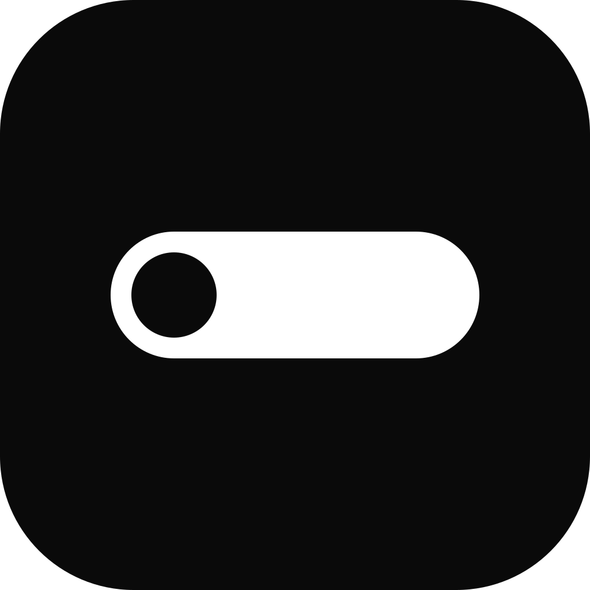

Android
APK firmato, Android 8 o successivo. Comprende Google Cast e Android Auto.

Loss MusifyUn lettore musicale per la musica di YouTube e per i tuoi file audio: solo l'audio, alla qualità più alta che YouTube offre, con la stessa interfaccia su telefono, computer e tablet.
Ultima versioneAPK firmato, Android 8 o successivo. Comprende Google Cast e Android Auto.
Windows 10 e 11, 64 bit. Installazione oppure versione portatile senza installazione.
macOS 10.15 o successivo, Apple Silicon e Intel. Al primo avvio: tasto destro → Apri.
Web app installabile: aprila in Safari o Chrome, poi Condividi → «Aggiungi a Home». Si apre a tutto schermo, con i comandi nella schermata di blocco.
Questi sono gli unici download ufficiali. I file vengono pubblicati automaticamente da GitHub a ogni nuova versione, insieme al codice sorgente completo di quella versione: non esistono copie su altri siti. Chi scarica Loss Musify da altrove non scarica la nostra app.
Di ogni brano chiede soltanto la traccia audio migliore che YouTube offre (Opus fino a circa 160 kbps), senza video.
FLAC, WAV, ALAC e gli altri restano dove sono e suonano come sono. Nulla viene caricato in rete.
Comanda la musica dagli altri tuoi dispositivi sulla stessa rete, trasmettila a una TV o a una cassa, ascoltala insieme ad altri in sincrono.
Accedi con Google: preferiti, ricerche e statistiche sono gli stessi sul telefono e sul computer.
Loss Musify è un progetto indipendente, gratuito e open source (GPL-3.0). Non è affiliato né approvato da YouTube, Google o Spotify. Riproduce contenuti che restano su YouTube e non ne ospita nessuno. Leggi le note legali per sapere cosa questo comporta e la informativa sulla privacy per sapere quali dati tratta (in breve: restano sul tuo dispositivo e sul tuo account Google).